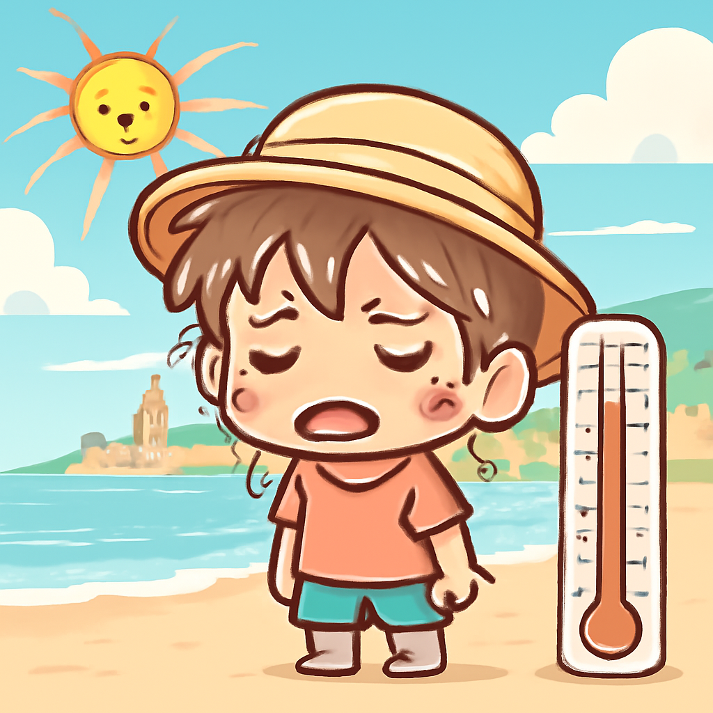
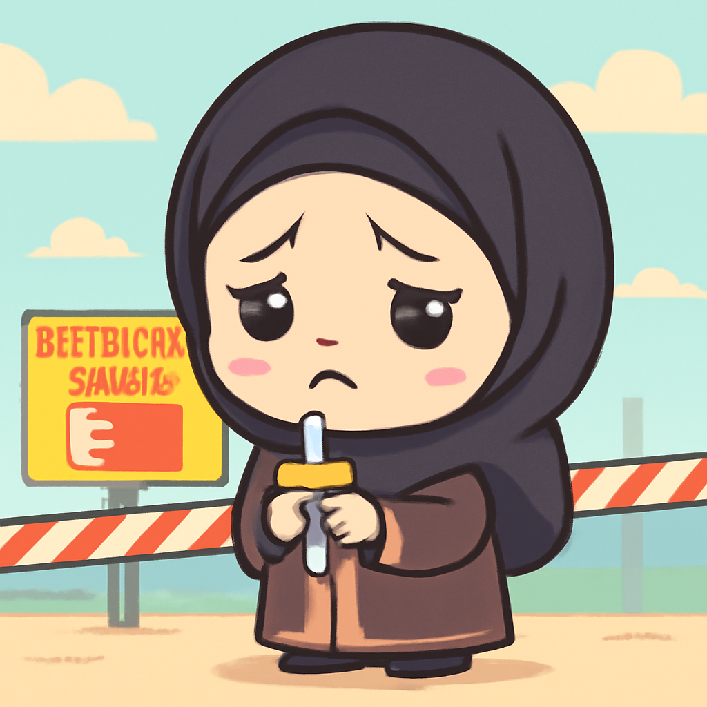

其一 · 法國巴黎 · 歐洲熱浪創紀錄高溫
法國、英國與西班牙等地陷入高溫熱浪。

近日，法國、英國與西班牙等地的氣溫飆升，創下歷史新高，讓數千萬人苦不堪言。這場熱浪甚至讓法國發出紅色警報，讓人不禁思考：是氣候變遷的提醒，還是熱得讓人想搬到北極？
🔗 原始新聞 ↗
2026-06-25 · 以古觀今，以笑抗愁
法國、英國與西班牙等地陷入高溫熱浪。

近日，法國、英國與西班牙等地的氣溫飆升，創下歷史新高，讓數千萬人苦不堪言。這場熱浪甚至讓法國發出紅色警報，讓人不禁思考：是氣候變遷的提醒，還是熱得讓人想搬到北極？
🔗 原始新聞 ↗
聯合國核查員將訪問伊朗核設施進行檢查。
聯合國核能總署的負責人表示，核查員將在即將到來的幾天內前往伊朗核設施進行檢查。這一舉動被視為美伊關係緩和的信號，對於國際社會來說，這可是個值得關注的動態，畢竟核問題可是牽動全球的熱點話題啊！
🔗 原始新聞 ↗
烏克蘭攻擊導致克里米亞最大城市停電。
烏克蘭對克里米亞的攻擊導致塞瓦斯托波爾等地大規模停電，當地官員警告，某些地區可能要到晚上才能恢復供電。這種黑暗讓人想起了大片電影情節，但現實可沒那麼好笑，因為居民的生活被嚴重影響了。
🔗 原始新聞 ↗
法國首次確認有醫生感染埃博拉病毒。
法國衛生部證實，一名在剛果民主共和國工作的醫生感染了埃博拉病毒，這讓許多人開始緊張起來。不過官方表示，對公眾的風險仍然很低，讓人不禁想問，這醫生是打算帶著病菌回家探親嗎？
🔗 原始新聞 ↗
巴林針對什葉派的宗教活動加強了管控措施。

巴林當局對什葉派的聖日慶祝活動實施了新限制，這一做法引發了國內外的關注與爭議。這樣的措施讓人再次意識到，在宗教自由與國家安全之間，永遠擺著一個微妙的天平。希望未來能有更多對話，而不是禁令。
🔗 原始新聞 ↗